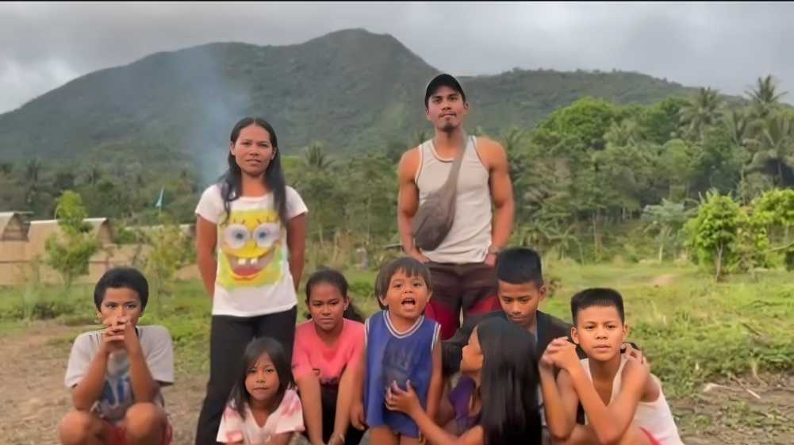

About Dumagats
The Dumagat people are an indigenous group living in the Sierra Madre mountain range of Tanay, Rizal, Philippines. Known for their peaceful and timid nature, they have maintained their unique culture and customs for generations. Despite their isolation, the Dumagats have faced significant challenges, including poverty, lack of education, and cultural discrimination. Their traditional way of life, centered around farming, hunting, and gathering, has been threatened by the encroachment of outsiders and the destruction of their ancestral lands. The Dumagats have also struggled with the impact of modernization, including the influx of migrants and the exploitation of their natural resources. Despite these challenges, the Dumagats continue to hold on to their rich cultural heritage and traditions, and efforts are being made to support their education and economic development.
Background
The Dumagats are known for their traditional practices such as traditional hunting, fishing, and farming, which are deeply connected to their ancestral land and the environment. They believe that all resources come from the Supreme Being, "makidepat," and should be protected and preserved for future generations.
Over the last 40 years, fear of displacement has constantly threatened the existence and identity of the Dumagat due to government-led development projects, especially mega-dam construction. Previous administrations have made numerous attempts to relocate Dumagat to build reservoirs or hydropower dams, citing the alarming population rise in Metro Manila and the need for more water for agriculture as primary reasons.
Funfact
The term "Dumagat" literally means "sea-faring" or "from the sea" in Philippine languages. The Dumagats are believed to be the ancestors of the ancient people of Tondo and Metro Manila, who settled in the coastal areas of Manila Bay over a thousand years ago. They are also known as the Sinaunang Tagalog from Eastern Luzon.
Challenges that they face
Over time, the Dumagats have faced various challenges, including poverty and threats to their ancestral domain. The local government of Tanay and non-government organizations have collaborated to address the community's needs in livelihood, education, technology, communication, and adaptation to modern life.
Despite these challenges, the Dumagats have maintained their unique culture, beliefs, and way of life, which are deeply rooted in their ancestral land. They have a strong sense of community and believe that the land belongs to everyone and should not be owned by individuals. The Dumagat youth in Tanay, Rizal are actively engaged in preserving their cultural knowledge and sharing their experiences with other indigenous communities in the region.